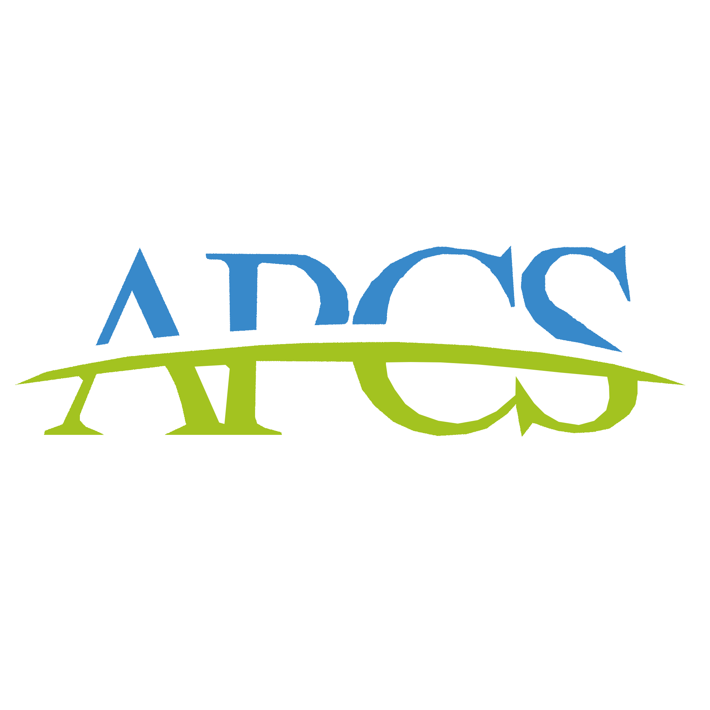
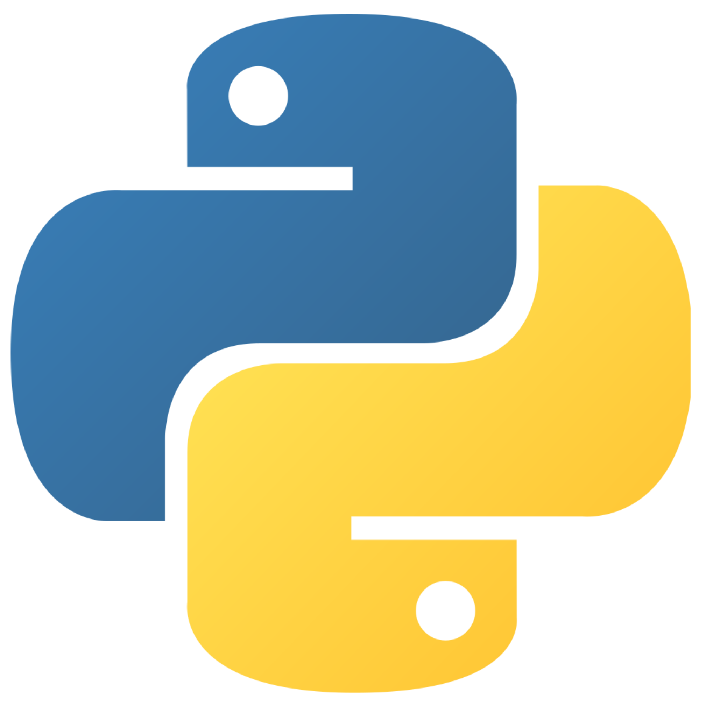

關於
成功電研是一群熱愛程式的高中生組成的，一起學習、成長，我們也舉辦各種活動，致力於聯繫友社情誼、推廣程式教育。
在這裡你可以盡情的揮灑青春，和朋友一起研究專題，發展屬於自己的能力。這裡永遠有一群最好的夥伴等著你。
課程

APCS
APCS為大學程式設計先修檢測(Advanced Placement Computer Science)，藉由舉辦具公信力之「程式設計檢測」，讓具備程式設計能力之高中職學生，能夠檢驗學習成果，並供作大學選才的參考依據。

C++
C++是一種使用廣泛的電腦程式設計語言。它是一種通用程式設計語言，支援多重程式設計模式，例如程序化程式設計、資料抽象化、物件導向程式設計、泛型程式設計和設計模式等。

Python
Python是一種廣泛使用的直譯式、進階編程、通用型程式語言，Python的設計哲學強調程式碼的可讀性和簡潔的語法。

JavaScript
JavaScript是一種進階的、直譯的程式語言。JavaScript支援物件導向編程，指令式程式設計，原形鏈物件導向。
社課
一般社課

時間：每週五下午社團聯課活動時間
地點：成功高中求是樓電腦教室
講師團隊：成功電研高二教學群
內容：APCS題目、C/C++、python
備註：一定要參加，否則會記曠課
放學社課